第 12 讲：粒子系统与音频系统
从粒子发射、模拟、渲染到 GPU 粒子，再到 3D 音频的空间化、衰减与混响，搭建游戏特效与声音的两大支柱。
◆ 学完这一讲，你应该能
能描述粒子系统的组成（粒子、发射器、系统）与生命周期，并解释发射器的三大职责。
能说明粒子模拟中速度、加速度、位置更新的基本积分过程，并列举常见模拟属性（重力、颜色、大小、碰撞）。
能区分 Billboard、Mesh、Ribbon 三类粒子的渲染方式与适用场景。
能解释 Alpha 混合排序的必要性、排序层级（全局/发射器/粒子间）以及低分辨率粒子渲染与双边升采样的流程。
能概述 GPU 粒子的帧流程（初始化、生成、模拟、排序、渲染、交换）及并行归并排序的两种思路。
能说明声音的物理量（声压、声强、声压级）、数字音频基础（PCM、采样定理、量化）以及 3D 音频的空间化、衰减、遮挡与混响等概念。
核心结论速记
粒子系统由粒子、发射器、系统三层组成：发射器定义生成规则、模拟逻辑和渲染方式，系统是多个发射器的集合。
粒子模拟的核心是每帧用加速度更新速度、用速度更新位置；重力、颜色、大小、旋转、碰撞等都是在此框架上叠加的模块。
Billboard 粒子始终面向相机，Mesh 粒子是 3D 模型，Ribbon 粒子把相邻粒子连成条带，常用于刀光、拖尾。
半透明粒子必须按到相机的距离排序才能正确混合；排序粒度从粗到细分为系统间、发射器间、粒子间，全局排序最准确但开销大。
低分辨率粒子渲染先把粒子画到半分辨率缓冲，再用双边升采样合成到全分辨率场景，可大幅降低填充率开销。
GPU 粒子用计算着色器并行模拟，核心是粒子池 + 死/活列表 + 原子操作，每帧执行生成、模拟、剔除、排序、渲染、交换列表。
3D 音频需要声源（单声道信号 + 位置）和听者（虚拟麦克风：位置、速度、朝向），通过声像平移、衰减、遮挡、混响等营造空间感。
等功率声像平移保持左右声道功率恒定（用正弦/余弦曲线），比线性平移听感更自然；距离衰减近似球面波声压随距离反比下降。
011. 粒子系统是什么：从雪花到刀光
粒子系统（Particle System）是游戏里制造「模糊、大量、动态」视觉效果的主力工具。课件引用了 William Reeves 的定义：粒子系统是大量微小粒子的集合，这些粒子共同表现一个模糊物体；粒子随着时间被生成、在系统内移动和变化、最终消亡。
三层结构：
- 粒子（Particle）：通常是一个 sprite（二维贴图）或 3D 模型，拥有位置、速度、大小、颜色、生命周期等属性。
- 发射器（Particle Emitter）：定义粒子如何被模拟，负责三件事：① 生成规则（spawn rules）——在哪里、以什么频率生成；② 模拟逻辑（simulation logic）——每帧如何更新；③ 渲染方式（how to render）——用 Billboard、Mesh 还是 Ribbon 画出来。
- 粒子系统（Particle System）：多个发射器的集合。一个复杂的爆炸效果往往由「火焰发射器 + 烟雾发射器 + 火星发射器」组合而成。
生命周期：粒子从生成（spawn）开始，经历每帧的模拟更新，直到寿命耗尽或满足消亡条件（如碰撞、移出边界）后死亡。
生成位置有三种常见方式：单点生成（Single position）、按区域生成（Spawn based on area）、按网格表面生成（Spawn based on mesh）。生成模式分为连续生成（Continuous，每帧按速率生成，可基于时间或距离）和爆发生成（Burst，一次性生成一批粒子并同时模拟）。
直觉：发射器像「水龙头」，粒子像「水滴」，系统像「一组水龙头组成的喷泉」。水龙头的开关规则、水压、喷口形状分别对应生成规则、模拟参数和渲染方式。
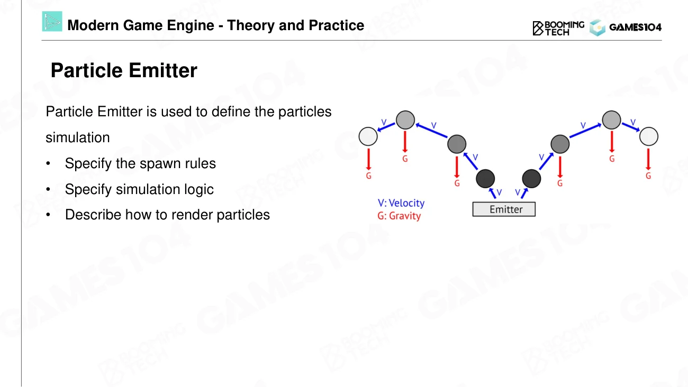
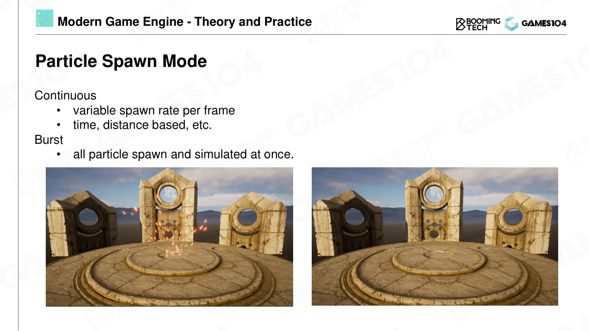
常见坑
粒子数量过多导致帧率骤降 → 发射速率或生命周期设置过大 → 检查发射器的 spawn rate 与 lifetime，必要时用 LOD 或 GPU 粒子。
粒子在场景中「凭空出现」→ 生成位置是单点且没有初始速度扩散 → 改用区域生成或给粒子一个初始速度锥。
UE / Unity 落地
UE 的 Niagara 中，Emitter 对应「发射器」，System 对应「粒子系统」，每个 Emitter 有 Spawn、Update、Render 等模块组。
Unity 的 Particle System 组件本身就是一个系统，其下的子发射器（Sub Emitters）对应「发射器集合」的概念。
022. 粒子怎么动：模拟与常见属性
粒子模拟（Simulate）控制粒子随时间如何变化。最核心的更新规则是每帧执行：
\[ \vec{v}_{t+1} = \vec{v}_t + \vec{a} \, \Delta t \] \[ \vec{p}_{t+1} = \vec{p}_t + \vec{v}_{t+1} \, \Delta t \]
其中 \(\vec{a}\) 是加速度（由重力、风力、阻力等力产生），\(\vec{v}\) 是速度，\(\vec{p}\) 是位置。课件用 Frame1 到 Frame4 的示意图强调：加速度更新速度，速度再更新位置。
常见模拟属性：
- 重力（Gravity）：给所有粒子一个恒定的向下加速度，模拟下落。
- 旋转（Rotation）：粒子可以绕自身轴旋转，增加动态感。
- 颜色（Color）：粒子颜色随时间变化，例如火焰从亮黄渐变为暗红。
- 大小（Size）：粒子大小随时间缩放，例如烟雾扩散变大。
- 碰撞（Collision）：粒子与场景碰撞后反弹、消失或粘附。
这些属性通常以「模块」形式叠加在基础模拟之上，每个模块只负责一种行为。
直觉：粒子模拟就像给每个粒子单独做一次「迷你物理更新」，只不过没有刚体之间的复杂约束，只有简单的力与积分。
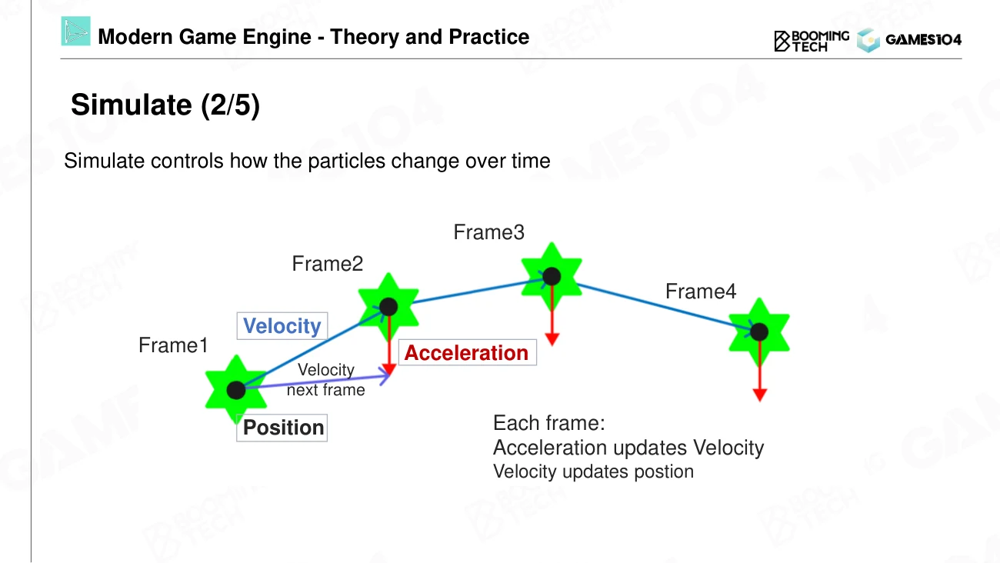
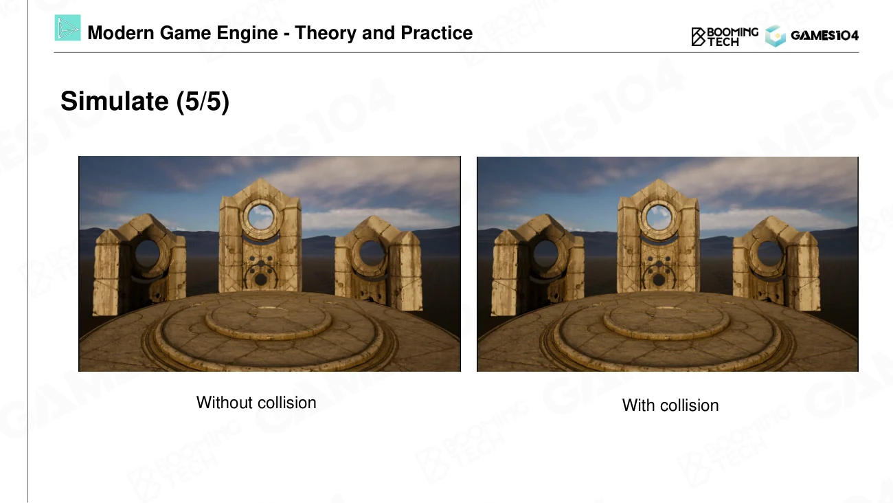
常见坑
粒子运动速度与帧率相关 → 更新时没有乘 \(\Delta t\) → 确保每帧更新使用时间步长，或使用固定时间步。
粒子颜色/大小变化不生效 → 模块顺序错误或曲线未启用 → 检查模块的更新顺序和曲线关键帧。
UE / Unity 落地
UE Niagara 中，Gravity Force、Color、Scale、Collision 等模块直接对应上述属性，可在 Emitter Update 和 Particle Update 阶段添加。
Unity Particle System 的「Force over Lifetime」「Color over Lifetime」「Size over Lifetime」「Collision」模块分别对应重力、颜色、大小、碰撞。
033. 粒子长什么样：Billboard、Mesh 与 Ribbon
粒子最终要渲染出来，课件介绍了三种粒子类型：
- Billboard 粒子：每个粒子是一个 sprite（二维贴图），但它看起来像 3D 的，因为它始终面向相机（always face the camera）。这是最常用、最省性能的类型，适合火焰、烟雾、光晕。
- Mesh 粒子：每个粒子是一个 3D 模型，例如爆炸中飞出的碎石。它保留模型的立体形状，但每个粒子都是一个独立网格，开销比 Billboard 大。
- Ribbon 粒子：把相邻粒子连接起来，在相邻粒子之间渲染四边形（quad），形成一条条带。常用于刀光（slash）、拖尾、闪电。
Ribbon 粒子的细节：
- 粒子本身是条带上的控制点（课件图中红点）。
- 如果不做平滑，条带在粒子转折处会出现尖锐的折角（sharp angles），看起来生硬。
- 平滑方案：在粒子之间插入额外分段（extra segments），并使用向心 Catmull-Rom 插值（Centripetal Catmull-Rom interpolation）。分段数可设置，但会增加 CPU 开销。
直觉：Billboard 像「贴纸」，Mesh 像「小石子」，Ribbon 像「用绳子把珠子串起来」。
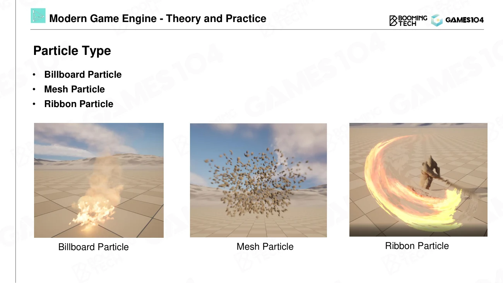
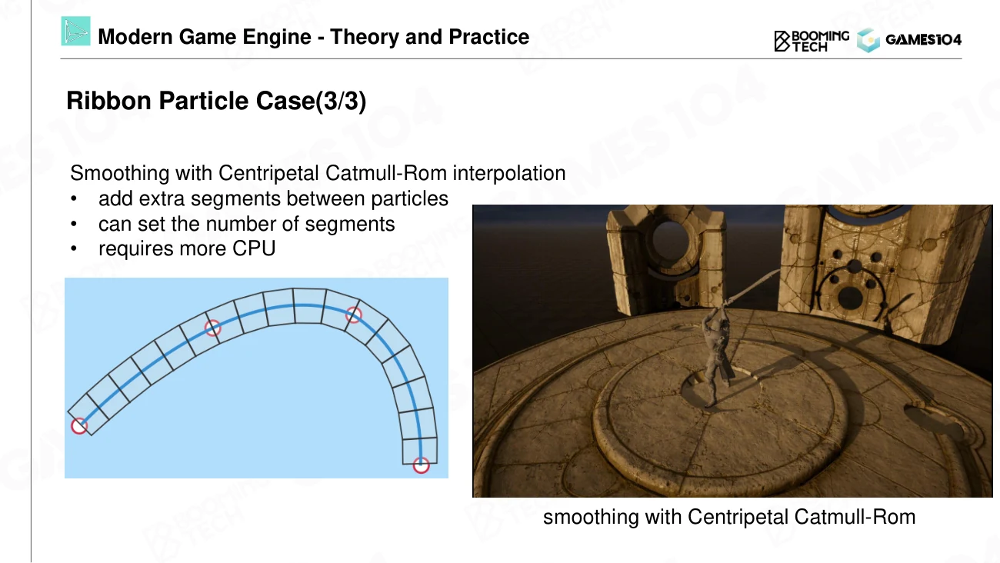
常见坑
Billboard 粒子在相机移动时「抖动」或方向错误 → Billboard 的朝向计算依赖相机，若相机快速旋转可能产生跳变 → 检查 Billboard 模式（如面向相机平面还是面向相机位置）。
Ribbon 粒子出现断裂或扭曲 → 粒子间距过大或插值参数不当 → 增加粒子密度或调整 Catmull-Rom 的张力参数。
UE / Unity 落地
UE Niagara 中，Renderer 模块可选择 Sprite（对应 Billboard）、Mesh、Ribbon 渲染器。
Unity Particle System 的 Render Mode 可选 Billboard、Stretched Billboard、Horizontal Billboard、Vertical Billboard、Mesh；Trail 模块可做拖尾。
044. 半透明粒子的排序与低分辨率渲染
粒子通常是半透明的，渲染时需要 Alpha 混合：
\[ C_{\text{result}} = C_{\text{src}} \cdot \alpha_{\text{src}} + C_{\text{dst}} \cdot (1 - \alpha_{\text{src}}) \]
混合顺序至关重要：如果先画近处再画远处，远处粒子会被错误地混合到近处粒子之上，结果与排序后完全不同。因此半透明粒子必须按到相机的距离排序（通常从远到近）。
排序层级：
- 全局排序（Global）：对所有粒子统一按距离排序，最准确但性能开销大。
- 层级排序（Hierarchy）：按「系统 → 发射器 → 发射器内部粒子」逐层排序。系统/发射器之间用包围盒距离，粒子之间用粒子到相机的距离。
- 课件还展示了 Per Emitter Sort（每个发射器内部排序）和 Global Sort 的对比。
全分辨率粒子的问题：如果粒子铺满屏幕，每个像素都要执行混合，填充率开销巨大（costly，worst case as particles fill the screen）。
低分辨率粒子渲染：
- 把场景渲染到全分辨率缓冲。
- 把粒子渲染到半分辨率（或更低）的离屏缓冲，同时输出粒子颜色（RGB）和粒子 Alpha。
- 对半分辨率粒子缓冲做双边升采样（Bilateral Upsampling），结合半分辨率深度和全分辨率场景深度，避免边缘模糊。
- 用升采样后的粒子颜色与场景颜色混合： \[ C_{\text{result}} = C_{\text{dst}} \cdot (1 - \alpha_{\text{src}}) + C_{\text{src}} \cdot \alpha_{\text{src}} \] \[ \alpha_{\text{result}} = \alpha_{\text{dst}} \cdot (1 - \alpha_{\text{src}}) + \alpha_{\text{src}} \]
直觉：低分辨率粒子就像「先在小画布上画烟雾，再放大贴到大画布上」，因为烟雾本身模糊，放大损失不明显，但省了大量像素填充。
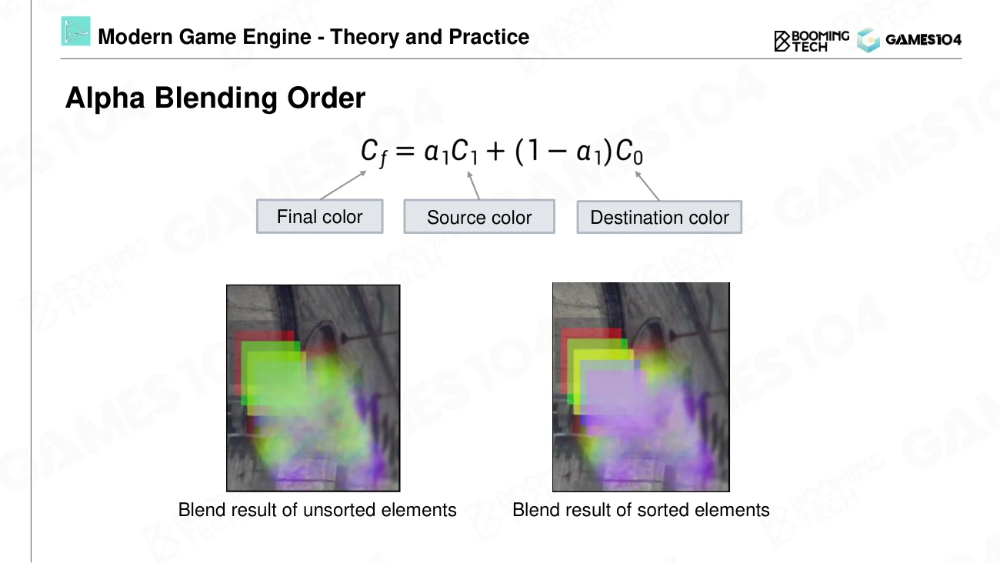
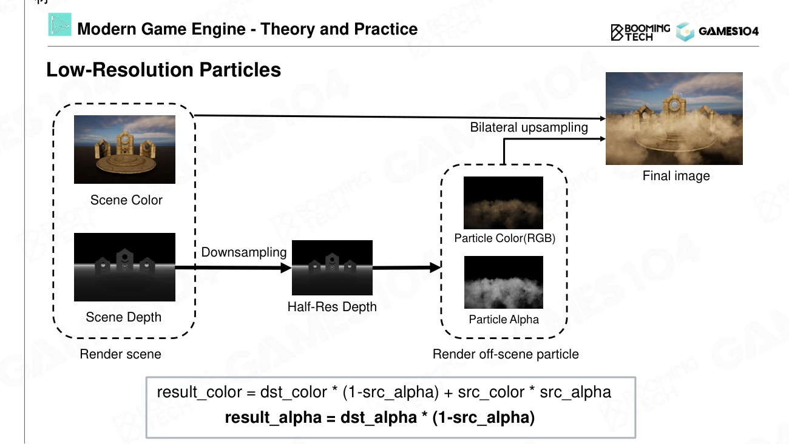
常见坑
粒子出现「方块状」硬边 → 低分辨率缓冲升采样时未使用双边权重 → 检查双边升采样是否结合了深度信息。
粒子之间互相遮挡关系错误 → 排序粒度太粗（只按发射器排序）→ 改用全局排序或增加排序层级。
UE / Unity 落地
UE 的 Niagara 有「Sort Mode」选项（如 View Depth、View Distance），对应粒子排序；半透明渲染在管线中自动处理排序。
Unity 的 Particle System 有「Sort Mode」（By Distance、Oldest in Front 等）和「Sorting Fudge」控制排序偏移。
055. GPU 粒子：把模拟搬到显卡上
当粒子数量达到数万甚至百万级时，CPU 逐粒子更新会成为瓶颈。GPU 粒子利用计算着色器（Compute Shader）的高度并行性来模拟粒子。
为什么用 GPU：
- 粒子模拟是高度并行的任务，适合大量粒子同时计算。
- 解放 CPU 去处理游戏逻辑。
- 容易访问深度缓冲来做碰撞。
帧流程（课件以「粒子池」为核心）：
- 初始状态：粒子池是一个大缓冲，所有槽位初始为 DEAD（可用）。
- 生成粒子：调度计算着色器线程执行生成计算；访问死列表（dead list）和活列表（alive list）需要原子操作（atomic），避免多线程冲突。
- 模拟：调度
alive_count_0个线程，计算位置、速度、深度碰撞等，把数据写回粒子池；同时做视锥剔除（frustum culling），把可见粒子写入距离缓冲。 - 排序、渲染与交换：按距离对剔除后的活列表排序，渲染粒子，然后交换活列表（为下一帧准备）。
并行归并排序（Parallel Mergesort）：
- 方法一：每个源元素一个线程，每个线程决定「我去哪里？」——问题是写入不连续。
- 方法二（更好）：每个目标元素一个线程，每个线程询问「我从哪里来？」——写入连续，效率更高。
深度缓冲碰撞：把粒子位置重投影到上一帧的屏幕空间纹理坐标，读取上一帧深度纹理，检查粒子是否与深度缓冲碰撞（但不要完全在物体背后，需考虑厚度值 thickness）。
直觉：GPU 粒子像「把每个粒子交给一个工人同时处理」，而 CPU 粒子像「一个工人依次处理所有粒子」。
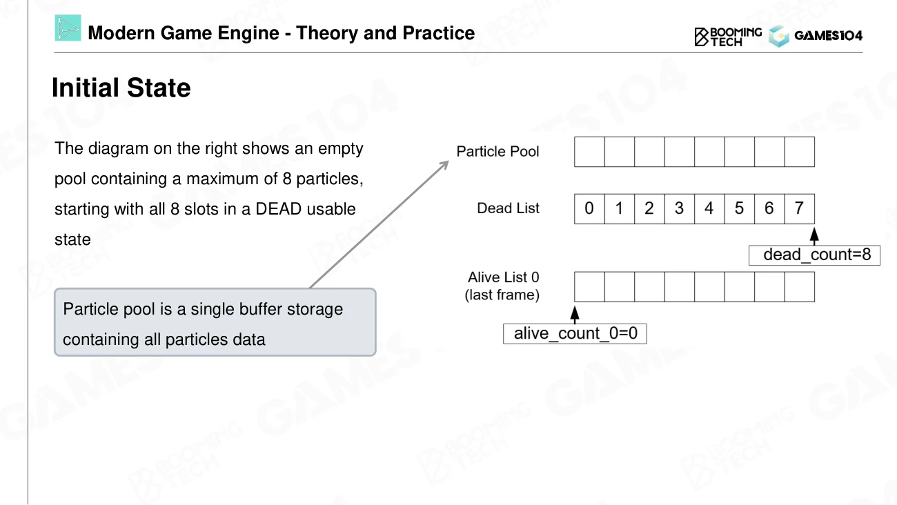
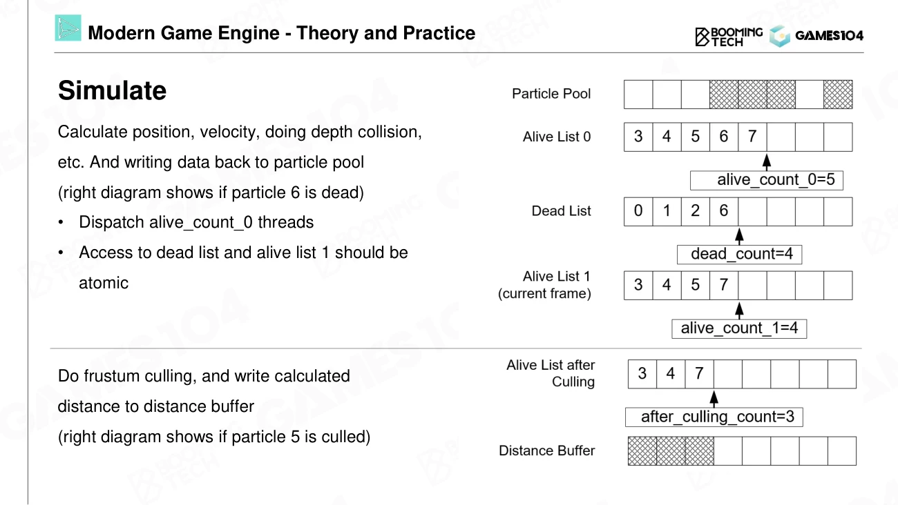
常见坑
GPU 粒子数量超过池容量 → 生成时没有检查死列表是否为空 → 在生成前检查可用槽位，或扩大池容量。
粒子碰撞穿透薄物体 → 深度缓冲碰撞只检查单点深度，未考虑厚度 → 增加厚度阈值或使用多次采样。
UE / Unity 落地
UE Niagara 支持 GPU 粒子模拟（GPU Simulation），在 Emitter 属性中可切换 Sim Target 为 GPUCompute Sim。
Unity 的 VFX Graph 默认在 GPU 上运行，使用 Compute Shader 模拟大量粒子。
066. 声音的物理与数字基础
声音在游戏中承担娱乐、增强真实感、营造氛围三大作用。课件用「有声音/无声音」的对比图说明声音对体验的巨大影响。
物理量：
- 声压（Sound Pressure）：声波引起的局部大气压偏离，单位帕斯卡（Pa）。
- 质点速度（Particle Velocity）：介质中粒子传递波时的速度，单位 m/s。
- 声强（Sound Intensity）：声波携带的功率，单位 W/m²。
- 声压级（Sound Pressure Level, SPL）：声压相对于参考值的对数度量，单位分贝（dB）。参考声压 \(p_0\) 通常取人耳听阈（约 20 μPa， roughly the sound of a mosquito flying 3 meters away）。公式为： \[ L_p = 20 \log_{10}\left(\frac{p}{p_0}\right) \text{ dB} \]
音调（Pitch）：由声波频率决定，频率越高音调越高。 音色（Timbre）：由泛音/谐波的频率与相对强度组合决定，让我们能区分不同乐器。 相位与噪声抵消：相同频率、相同振幅但相位不同的声波叠加可能相互抵消。
人耳听觉特性：可听频率范围约 20 Hz ~ 20 kHz，声压级范围约 0 ~ 130 dB。
数字音频：
- PCM（脉冲编码调制）：采样（Sampling）、量化（Quantizing）、编码（Encoding）三步。
- 采样频率：每秒采样次数（Hz）。奈奎斯特-香农采样定理：采样频率至少是信号最高频率分量的两倍，才能无失真恢复。
- 量化位深：每个采样点的比特数，决定动态范围。
- 常见格式：WAV（无压缩，质量高、体积大）、FLAC（无损压缩）、MP3/OGG（有损压缩）。
直觉：数字音频就像「用格子纸描摹连续曲线」——采样是横向格子密度，量化是纵向格子精度。
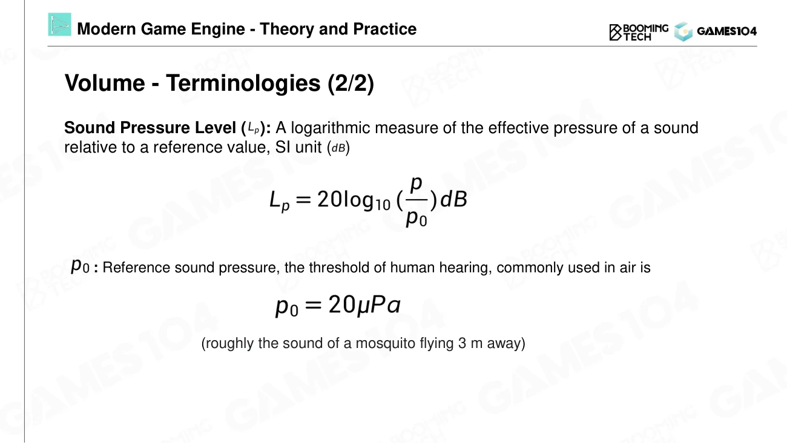
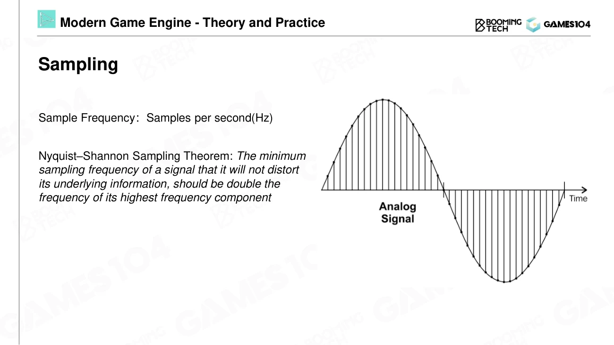
常见坑
音频出现混叠噪声 → 采样频率低于信号最高频率的两倍 → 提高采样率或在采样前做低通滤波。
音量调节感觉不线性 → 直接线性缩放振幅，但人耳对响度感知近似对数 → 使用分贝刻度或对数曲线调节。
UE / Unity 落地
UE 的 Sound Wave 资产可设置采样率、位深；音频格式支持 WAV、ADPCM 等。
Unity 的 Audio Clip 导入设置中可选择 Load Type、Compression Format（PCM、ADPCM、Vorbis、MP3）。
077. 3D 音频：空间化、衰减与遮挡
3D 音频让声音从场景中的特定位置发出，并随听者位置变化。
声源（3D Sound Source）：一个单声道音频信号，从特定位置发出。 听者（Listener）：虚拟麦克风，拥有位置、速度、朝向。
空间化（Spatialization）：把声音相对听者定向的技术，包括：
- 声像平移（Panning）：把音频信号分配到新的立体声或多声道声场。
- 线性平移：左右声道增益之和为 1。但人耳感知的响度与声波功率成正比，功率等于振幅的平方，所以线性平移在中间位置功率会下降。
-
等功率平移（Equal Power Panning）：保持功率恒定，常用正弦/余弦曲线： \[ g_L = \cos\left(\frac{\pi}{2} x\right), \quad g_R = \sin\left(\frac{\pi}{2} x\right) \] 其中 \(x \in [0,1]\) 是声像位置。
-
声场（Soundfield）：全环绕声，也称 Ambisonics，用于视频和 VR。
- 双耳音频（Binaural Audio）：通过 HRTF 等模拟人耳听到的空间感。
衰减（Attenuation）：听者远离声源时音量衰减。真实世界中球面波声压随距离 \(r\) 反比下降： \[ p \propto \frac{1}{r} \] 衰减形状（Attenuation Shape）包括：
- 球体（Sphere）：最常用，模拟真实点声源。
- 胶囊体（Capsule）：适合水管等长条声源。
- 盒体（Box）：适合房间环境音。
- 锥体（Cone）：适合定向声源，如广播喇叭。
遮挡与阻塞（Obstruction and Occlusion）：从听者向声源发射多条发散射线，查询命中表面的材质属性，根据被挡射线的数量决定声音能量被吸收多少。
混响（Reverb）：在含反射面的环境中，听者收到三类声波：直达声（dry）、早期反射（echo）、晚期混响（tail）。混响时间（Reverberation Time）衡量声音衰减快慢，由房间大小和材料决定。吸收系数 \(\alpha\) 与材料数量决定吸收量。混响效果的控制参数包括预延迟（Pre-delay）、高频比（HF ratio）等。
多普勒效应（Doppler Effect）：波源与观察者相对运动导致频率变化： \[ f' = f \cdot \frac{v + v_0}{v - v_s} \] 其中 \(f\) 是原始频率，\(f'\) 是观察频率，\(v\) 是声速，\(v_0\) 是听者速度，\(v_s\) 是声源速度。
直觉：3D 音频就像在虚拟世界里放了一个「麦克风」，所有声音根据它和声源的位置关系被重新计算。
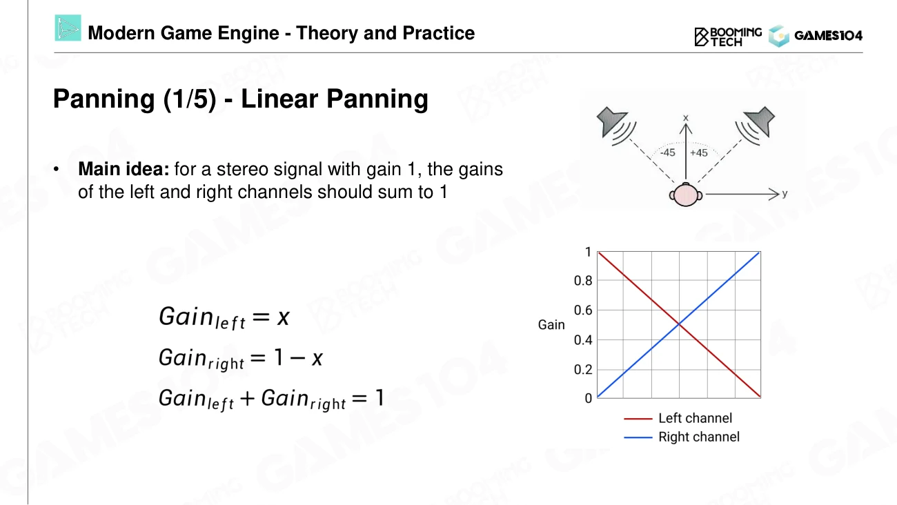
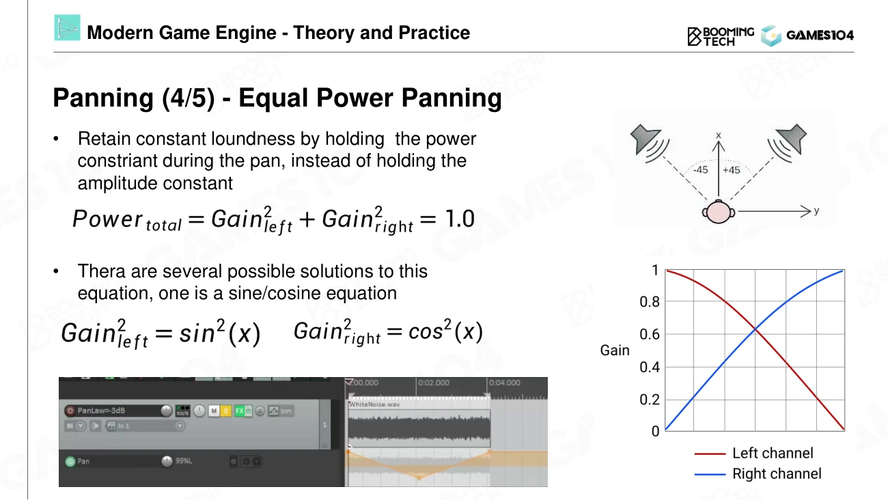
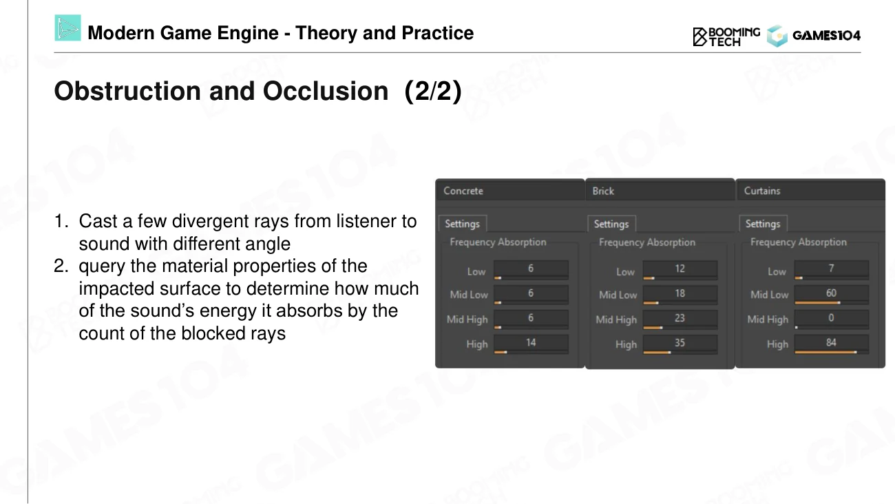
常见坑
声音在中间位置听起来变小 → 使用了线性平移 → 改用等功率平移曲线。
多普勒效应导致声音「怪叫」→ 声源速度计算错误或未做限幅 → 检查速度单位，限制最大频移。
遮挡计算开销大 → 每帧对每个声源发射大量射线 → 降低射线数量或更新频率。
UE / Unity 落地
UE 的 Audio Volume 和 Attenuation 资产可设置衰减形状（Sphere、Capsule、Box、Cone）和空间化参数。
Unity 的 Audio Source 有 Spatial Blend、Attenuation 曲线、Doppler Level、Spread 等参数；Audio Listener 挂在相机上。
引擎对照表
| 概念 / 效果 | Unreal Engine | Unity |
|---|---|---|
粒子发射器 | Niagara Emitter（Spawn/Update/Render 模块组） | Particle System 组件（含 Sub Emitters） |
粒子渲染类型 | Niagara Renderer：Sprite、Mesh、Ribbon | Render Mode：Billboard、Mesh；Trail 模块 |
GPU 粒子 | Niagara GPU Simulation（GPUCompute Sim） | VFX Graph（默认 GPU 模拟） |
粒子排序 | Niagara Sort Mode（View Depth/Distance） | Particle System Sort Mode（By Distance 等） |
3D 音频衰减 | Attenuation 资产（Sphere/Capsule/Box/Cone） | Audio Source 的 Attenuation 曲线与 Spatial Blend |
混响 | Reverb 效果（Audio Volume 中设置） | Audio Reverb Zone / Reverb Filter |
术语双语表
| English | 中文 | 说明 |
|---|---|---|
| Particle System | 粒子系统 | 大量微小粒子的集合，用于表现模糊、动态的视觉效果。 |
| Emitter | 发射器 | 定义粒子的生成规则、模拟逻辑和渲染方式。 |
| Billboard | 公告板 | 始终面向相机的二维 sprite，常用于火焰、烟雾。 |
| Ribbon Particle | 条带粒子 | 把相邻粒子连接成条带，用于刀光、拖尾。 |
| Alpha Blending | Alpha 混合 | 按透明度混合源颜色与目标颜色，需要正确排序。 |
| Compute Shader | 计算着色器 | GPU 上的通用并行计算程序，用于 GPU 粒子模拟。 |
| PCM | 脉冲编码调制 | 数字音频的标准编码方式：采样、量化、编码。 |
| Nyquist-Shannon Theorem | 奈奎斯特-香农采样定理 | 采样频率至少为信号最高频率的两倍才能无失真恢复。 |
| Spatialization | 空间化 | 把声音相对听者定向的技术，包括声像平移、声场、双耳音频。 |
| Doppler Effect | 多普勒效应 | 波源与观察者相对运动导致频率变化的现象。 |
课后练习
01 粒子系统由哪三层组成？发射器的三大职责是什么？
查看答案
提示：
从粒子、发射器、系统三个层次回答。
三层：粒子（Particle）、发射器（Emitter）、粒子系统（Particle System）。发射器三大职责：① 指定生成规则（spawn rules）；② 指定模拟逻辑（simulation logic）；③ 描述如何渲染粒子（how to render particles）。
02 为什么半透明粒子需要排序？全局排序与层级排序各有什么优缺点？
查看答案
提示：
从 Alpha 混合公式出发。
Alpha 混合结果依赖绘制顺序，未排序会导致远近粒子混合错误。全局排序对所有粒子按距离统一排序，结果最准确，但性能开销大；层级排序按系统→发射器→粒子逐层排序，性能较好，但跨发射器的粒子遮挡关系可能不准确。
03 写出等功率声像平移的左右增益公式（设声像位置 x∈[0,1]），并说明为什么它比线性平移好。
查看答案
提示：
使用正弦/余弦。
g_L = cos(πx/2)，g_R = sin(πx/2)。因为人耳感知响度与功率成正比，功率等于振幅平方，线性平移在中间位置功率下降，听起来变轻；等功率平移保持 g_L² + g_R² = 1，功率恒定，听感更自然。
04 简述 GPU 粒子的帧流程（从初始化到交换列表）。
查看答案
提示：
参考粒子池、死列表、活列表。
① 初始化粒子池，所有槽位为 DEAD；② 生成粒子：调度计算着色器线程，原子访问死列表和活列表；③ 模拟：调度 alive_count_0 个线程，更新位置、速度、碰撞，写回粒子池，并做视锥剔除；④ 排序：按距离对剔除后的活列表排序；⑤ 渲染粒子；⑥ 交换活列表，为下一帧准备。
05 在 UE 或 Unity 中实现一个「火焰 + 烟雾」的粒子效果，你会如何组织发射器和渲染类型？
查看答案
提示：
考虑火焰和烟雾的不同特性。
火焰发射器：Billboard 粒子，颜色从亮黄渐变到暗红，大小随时间缩小，使用叠加混合（Additive）。烟雾发射器：Billboard 粒子，颜色为灰黑色，大小随时间增大，使用半透明混合（Translucent），并开启排序。两个发射器放在同一个粒子系统中，通过系统统一管理。